Snap! Cheat Sheet
This guide will show you how to match up the procedures in the AP exam language with the blocks in Snap!.
Assignment, Display, and Input
There are significant differences between the language used on the AP exam and Snap! in this section.
a ← expression
In Snap!, you must first create a variable before you use assign it a value. You can use the  button in
the Variables palette to create a global variable or
button in
the Variables palette to create a global variable or .png "script variables (a)") to
create a local (script) variable.
to
create a local (script) variable.
DISPLAY (expression)
Variations on
say:Another way to display:
There are several ways to display data to the user in Snap!. One way is in the form of speech
balloons that are "spoken" by the sprites on the stage. Here is the behavior that results from running the
instruction say (expression):
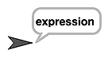
In Snap!, there are also variations on this block such as:
say for ( ) secs, which will only display the message for a specified number of seconds, andthink ( )andthink ( ) for ( ) secs, which both display the message as a thought balloon rather than as a speech balloon, like this:
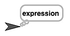
The write block is very different, but it's still a form of output to the user. It writes the
contents of the first input slot on the stage in the font size written in the second input slot.
INPUT ()
 and wait")

In Snap!, user input is always prompted by running an ask command. The user is asked
the question typed into the ask input slot, and their response can be accessed by using the
answer block, which can be placed in an input slot just like a variable.
Arithmetic Operators and Numeric Procedures
There are no major differences between the language used on the AP exam and Snap! in this section.
a + b
a – b
a * b
a / b
These blocks are straightforward. You can put any numeric expressions in the input slots, including numbers or variables. For example: or
a MOD b
Same as above: You can use any numeric expressions as input. For example:
RANDOM (a, b)
Same as above: You can use any numeric expressions as input.
Relational and Boolean Operators
There is one difference between the language used on the AP exam and Snap! in this section: you will need to create some procedures yourself.
a = b
a ≠ b
a > b
a < b
a ≥ b
a ≤ b
There is no
≠ block.(b)" title="(a) > (b)">
There is no
≥ block.There is no
≤ block.The hexagonal block shape indicates that this is a predicate block; it only reports (returns)
true or false.
There are no ≠ (not equal), ≥ (greater than or equal), or ≤
(less than or equal) blocks built into Snap!, but they are simple to build as needed:
,
(b))" title="not ((a) > (b))">, and
.
NOT condition
")
Hexagonal input slots indicate that a predicate (true/false) expression (a
condition)is expected as input.
condition1 AND condition2
 and ()")
Same as above: Hexagonal input slots require predicate inputs.
condition1 OR condition2
 or ()")
Same as above: Hexagonal input slots require predicate inputs.
Selection
There are no major differences between the language used on the AP exam and Snap! in this section.
IF (condition)
{
<block of statements>
}

Here is an example of how the if statement could look in Snap! when it has a condition
and a sequence of statements:
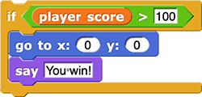 100)
{
go to x: (0) y: (0)
say (You win!)
}" title="if (player score > 100)
{
go to x: (0) y: (0)
say (You win!)
}">
IF (condition)
{
<first block of statements>
}
ELSE
{
<second block of statements>
}

Here is an example of how the if else statement could look in Snap! when it has a
condition and two sequences of statements:
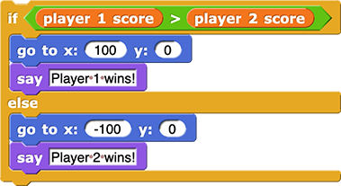 player 2 score)
{
go to x: (100) y: (0)
say (Player 1 wins!)
}
else
{
go to x: (-100) y: (0)
say (Player 2 wins!)
}
" title="if (player 1 score > player 2 score)
{
go to x: (100) y: (0)
say (Player 1 wins!)
}
else
{
go to x: (-100) y: (0)
say (Player 2 wins!)
}
">
Iteration
There are no major differences between the language used on the AP exam and Snap! in this section.
REPEAT n TIMES
{
<block of statements>
}

Here is an example of how the repeat statement could look in Snap! when it has an input
number and a sequence of statements:
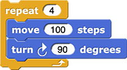
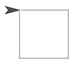
REPEAT UNTIL (condition)
{
<block of statements>
}

Here is an example of how the repeat until statement could look in Snap! when it has an
input number and a sequence of statements:
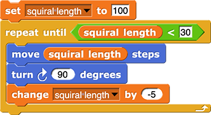
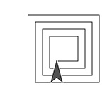
List Operations
There are only small differences in wording and structure between the language used on the AP exam and Snap! in this section.
list[i]
For example, 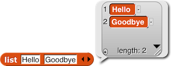
You can tell what kind of input is expected in each input slot of a block in Snap! by its shape. For
example,  of 'list input slot'") takes a number as its first input (indicated by the round input
slot) and a list as its second input (indicated by the small picture of a list):
takes a number as its first input (indicated by the round input
slot) and a list as its second input (indicated by the small picture of a list):

In addition, there is a drop-down menu for the first input slot allowing you to select the first, the last, or
a random item from the list instead of typing a number or dragging and dropping a variable in.
list[i] ← list[j]
At first glance, this looks a little different on the exam than in Snap!, but if you read the Snap! out loud, it is clear what it does: It replaces the item at position number i in the list with the item at position number j in the list.
Here's an example:
list ← [value1, value2, value3]
In Snap!, it's recommended not to name any variable list because there is a block called
list that creates new lists. Here are some examples of better list names (really, anything but
"list" is fine; that variable name is only shown at left to match the AP Exam reference sheet):
FOR EACH item IN list
{
<block of statements>
}
You can change the name of the first variable by clicking it.
Here is an example of how the for each statement could look in Snap! when it has a real
list name and a statement inside:
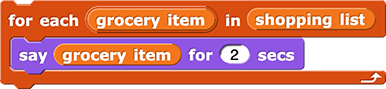
INSERT (list, i, value)
insert command in Snap! works the same as the
INSERTprocedure in the language on the AP exam; only the order of the inputs is different.
APPEND (list, value)
add command works like the
APPENDprocedure; only the order of inputs is different.
REMOVE (list, i)
delete command works like the
REMOVEprocedure; only the order of inputs is different.
LENGTH (list)
Note that Snap! has two length blocks:
- a "List"
lengthblock for measuring lists: and
and - an "Operators"
lengthblock for measuring strings:
Procedures
PROCEDURE name (parameter1, parameter2, ...)
{
<instructions>
}
In Snap!, procedures that do something are called commands. Command blocks have a rectangular, puzzle-piece shape because they are instructions to the computer designed to be snapped together one after another.
When you make a block, you choose the name of the block, the input parameters, and the palette it should appear in (the color). Then you design the instructions that will run when the block is clicked. Here is an example of what a real command block definition might look like in Snap!: 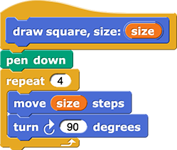
You can learn more about making block and adding inputs on the Snap! Cheat Sheet.
PROCEDURE name (parameter1, parameter2, ...)
{
<instructions>
RETURN expression
}
In Snap!, procedures that report (return) a value are called reporters. Reporter blocks have a rounded shape and they can either be clicked to report a value to the programmer or they can be dropped into an empty input slot of another block to be used as input.
When you make a reporter block, the block definition automatically includes a report block. The
value of the expression in the input slot of this report block is the value that is returned when
the reporter is run.
Here is an example of what a real reporter block definition might look like in Snap!:

{
RETURN (2 * x)
}")
Robot
These blocks do not exist in Snap!, but Snap! has something similar: sprite motion. The big difference is that the robot blocks in the AP language work on a grid, so the robot can move only vertically or horizontally. In Snap!, sprites move much more flexibility, but you can use Snap! blocks to simulate robot motion.
MOVE_FORWARD ()
In Snap!, you can use the  steps") block to move the sprite forward any number of steps.
block to move the sprite forward any number of steps.
MOVE_FORWARD ()an input, so if you want to move more than one grid square, you have to call the procedure repeatedly.
move block in Snap! to simulate the AP
MOVE_FORWARD ()procedure: Just use an input that is exactly the same size as the side length of the squares in your grid.
ROTATE_LEFT ()
ROTATE_RIGHT ()
In Snap!, you can use the  degrees") and
and  degrees") blocks to turn the sprite any number of degrees.
blocks to turn the sprite any number of degrees.
ROTATE_LEFT ()or
ROTATE_RIGHT ()an input; these AP procedures always turn exactly 90 degrees since they are used only to move a robot in a grid.
turn ↺ or turn ↻ blocks in Snap! to
simulate the AP
ROTATE_LEFT ()or
ROTATE_RIGHT ()procedures: Just use 90 degrees as the input.
CAN_MOVE (direction)
CAN_MOVE (direction), which returns true or false depending on whether or not the robot can move in that direction without running into a wall or walking off of the maze.
In Snap!, you can use these blocks to help your sprites determine how to move:
 ,
,
 , and
, and
 ? block with menu open showing three options: mouse-pointer, edge, and pen trails")